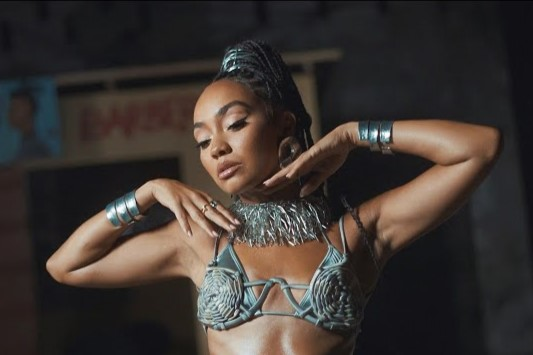

my favourite group - little mix
who are little mix
Little Mix is a British pop group that emerged as one of the most successful acts to come out of the reality television talent show "The X Factor." Formed in 2011 during the show's eighth season, Little Mix consists of members Perrie Edwards, Jesy Nelson, Leigh-Anne Pinnock, and Jade Thirlwall. Each member initially auditioned for the show as solo artists but were later grouped together by the judges to form a girl group.
Their journey began with their victory on "The X Factor," where they became the first group to win the competition. Following their win, Little Mix quickly rose to prominence with their debut single "Cannonball," which topped the UK Singles Chart. They continued to achieve commercial success with subsequent singles and albums, earning a reputation for their powerhouse vocals, catchy tunes, and empowering lyrics.
Throughout their career, Little Mix released several critically acclaimed albums, embarked on numerous successful tours worldwide, and amassed a dedicated fan base known as "Mixers." However, in 2023, the group announced their decision to disband after more than a decade together. Despite their breakup, Little Mix's legacy continues to resonate with fans globally, leaving behind a remarkable musical journey marked by chart-topping hits, memorable performances, and unwavering girl power.
memebers
-
leigh-anne
Leigh-Anne Pinnock, born Leigh-Anne Pinnock on October 4, 1991, was born and raised in High Wycombe, Buckinghamshire, England. Within Little Mix, Leigh-Anne brings a unique blend of charisma, charm, and vocal talent to the group. As a vocalist, dancer, and fashion icon, Leigh-Anne adds depth and flair to Little Mix's performances, captivating audiences with her stage presence and magnetic personality. Additionally, her advocacy for diversity, inclusion, and empowerment has further enriched the group's message, resonating with fans and fostering a sense of unity and solidarity within their global community.
jade
Jade Thirlwall, born Jade Amelia Thirlwall on December 26, 1992, hails from South Shields, England. She is one-third of the British pop sensation Little Mix, known for her infectious energy, dynamic stage presence, and versatile vocal range. Within the group, Jade serves as both a lead and backing vocalist, contributing to their signature harmonies and delivering standout performances. Her bubbly personality and unwavering dedication to the group's success have solidified her position as an integral member of Little Mix, earning her admiration from fans worldwide.
perrie
Perrie Edwards, born Perrie Louise Edwards on July 10, 1993, originally comes from South Shields, England. As a founding member of Little Mix, Perrie's powerful vocals, captivating stage presence, and distinctive style have helped shape the group's identity. Alongside her role as a lead vocalist, Perrie contributes to the group's songwriting process, infusing their music with personal experiences and heartfelt emotions. Her vocal prowess and unwavering passion for music have been instrumental in Little Mix's rise to fame, earning her widespread recognition and acclaim.
albums
Explore Little Mix's musical journey through their albums, from 'DNA' to 'Between Us.' Discover their evolution in sound and hits that have captivated audiences worldwide. Click on an album or song name to listen
Little Mix Discography
| Album | Year of Release | Favourite Song | Album Duration | Rating |
|---|---|---|---|---|
| DNA | 2012 | How Ya Doin' | 38 min | ★★★★☆ |
| Salute | 2013 | Little Me | 45 min | ★★★★★ |
| Get Weird | 2015 | Lightning | 50 min | ★★★★☆ |
| Glory Days | 2016 | Touch | 49 min | ★★★★★ |
| LM5 | 2018 | Joan of Arc | 48 min | ★★★★☆ |
| Confetti | 2020 | if You Want My Love | 45 min | ★★★★☆ |
| Between us | 2022 | Love (Sweet Love) | 46min | ★★★★★ |